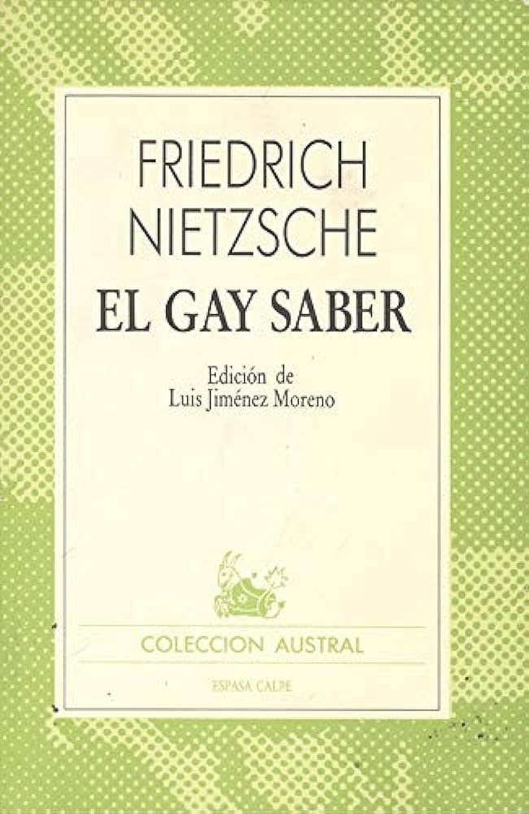
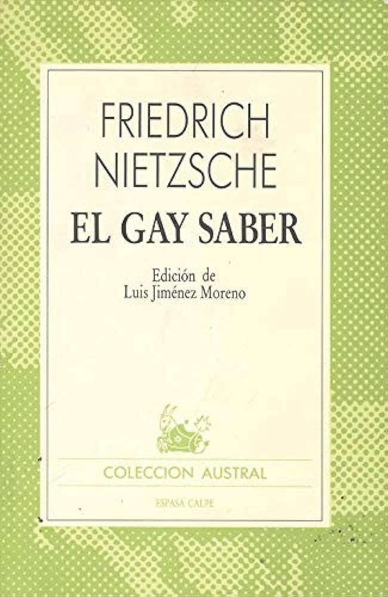

Biblioteca
Esta sección contiene en orden cronológico los distintos libros y artículos que leí. Esto me facilita el citado, ya que siempre que cite un libro, será la edición aquí listada a menos que aclare lo contrario en alguna publicación individualmente. Abajo de las imágenes de cada libro dejo una lista que aclara el año de la edición especifica que yo leí.

 



- Crepúsculo de los ídolos: 1996
- El anticristo: 1997
- El Gay Saber: 1986
- Más allá del bien y del mal: 2020
- La genealogía de la moral: 1975
- Así habló Zaratustra: 2016
- Ecce homo: 1995
- El Fracaso de la Derecha: 2022
- Investigaciones filosóficas: 2008
- Sobre la Eternidad del Mundo: 1981